Flemish Paintings Collection
The collection of seventeenth and eighteenth-century Flemish painting includes over 500 canvases by more than 140 artists, with works by almost all the leading masters of the Flemish school.
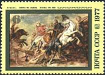
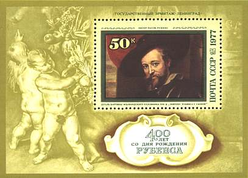
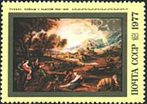
The exhibition occupies five rooms on the first floor of the New Hermitage, the central place allotted to works by the most prominent artists of seventeenth-century Flanders, Peter Paul Rubens and his closest associates Anthony van Dyck, and Frans Snyders. Their works are sufficiently numerous to severely limit the space available to display works by other leading artists, and only a small selection of the most important works can be shown at any one time in the permanent exhibition.
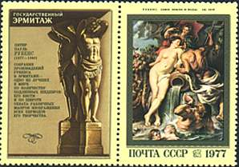
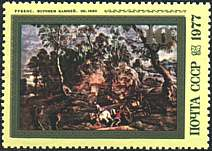
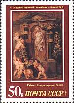
There are not only 22 paintings by Rubens, many of them of great size, but also 19 sketches, making the Hermitage collection one of great significance. Perseus and Andromeda (1620-1621), Portrait of a Lady-in-Waiting to the Infanta Isabella (1623-1625), and Bacchus (1638-1640) are the masterpieces of the collection.
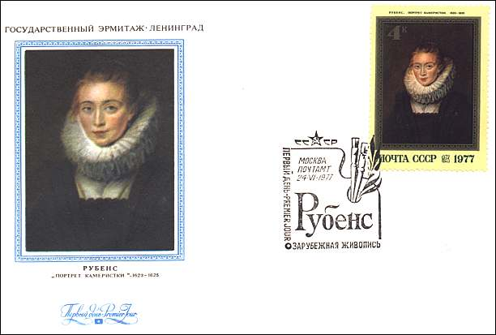
Twenty four works, mostly portraits, represent Rubens's younger contemporary and pupil, Anthony van Dyck. This superb collection spans all the periods of his creative work. The Portrait of a Lady-in-Waiting to the Infanta Isabella (see the FDC above) is unique amongst Rubens' portraits.

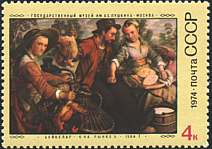

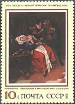
This charming image of a young and fragile girl represents the artist's idealized image of his daughter Clara Serena, who died at just 12 years old in 1623. The portrait is distinguished by strict lines and restrained coloring unusual to Rubens. The painting's title comes from the inscription on a preliminary drawing (Vienna, Albertina), possibly added in the 17th century.
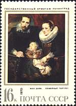
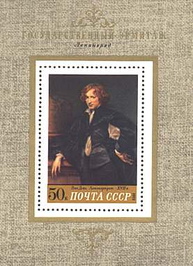
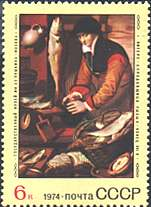
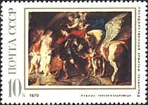
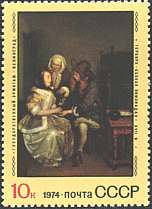
This self-portrait (see the M/S below), created not long after van Dyck's return from Italy, is one of the artist's best works in this genre. Stressing the refinement of his manners and his nature through his posture and general appearance, van Dyck presents his contemporaries' idea of a painter as an artist, a virtuoso, one from a world of harmony and beauty.